更容易生成
優先使用模型能直接產出的文字、圖片、布局與互動程式。簡單需求不必先解決 3D 座標、碰撞與相機。
Product direction · Revision 5 · 2026-09-23
Unwritten Land 是讓 AI 生成、執行與修改互動作品的框架。降低製作與試錯成本是核心價值；遊戲是主要用途，2D 是預設，Three.js 是可選能力。現在的主作品是一張無限的 HD-2D 大地：故事寫成一章接一章的章節（最多 99 章），戰鬥、橫向捲軸與地城都在同一張地圖上。
Page 01 · Product direction
框架的工作是讓想法更快成為可操作的作品，再讓創作者低成本迭代。
Page 02 · The game today
標題、開新世界、章節、戰鬥、調整機制與地點。以下全是開發版的實機截圖，文字寫的是它們現在怎麼運作。
Page 03 · Delivery plan
生成方式、隔離播放器、創作閉環、無限章節、HD-2D、大地戰鬥、地點、角色圖與 Create a game 都已實作並實機驗收；本頁只寫實際量到的數字。
Page 04 · Contract & world
作品契約、執行邊界、儲存責任與故事章節都已落地；本頁是現況，不是提案。
Page 05 · On-chain
內容永遠不上鏈；鏈上只有雜湊、作者、血緣、玩家留下的話，以及指向卡帶版本的 ENSv2 名稱。沒有設定鏈，整個遊戲照常運作。
01 · Core value
同一個需求，選擇能讓模型用更少上下文、更少錯誤與更少修補，產出可玩結果的表示方式。
優先使用模型能直接產出的文字、圖片、布局與互動程式。簡單需求不必先解決 3D 座標、碰撞與相機。
換角色圖、改勝利條件或調整畫面，都能定位到小範圍內容；保留沒有要求改動的部分。
生成後直接預覽，收集可定位的錯誤，有限次修補。隨時保留上一個可執行版本。
02 · Scope
「任意玩法」代表不必先新增專用底層模組；不代表第一版支援所有大型遊戲、任意依賴或無限制的系統權限。
| 面向 | 新版決策 | 第一版界線 |
|---|---|---|
| 呈現 | HTML／CSS、文字與圖片為預設；Canvas 按需使用 | Three.js 可選；3D、物理與世界地形都不是必經路徑 |
| 玩法 | 模型產生具體互動、狀態與規則 | 先用小型作品驗證自由度，不要求涵蓋每個 genre |
| 模組 | 提供通用服務與可重用素材 | 不先做玩法目錄；新玩法原則上只改作品 |
| 創作 | 一句需求 → 生成 → 試玩 → 自然語言修改 | 不強制 Genre Matrix、Capability Compiler 或六步 Create |
| 圖片與元素 | 素材引用與程式分離，可獨立替換 | 先用實際提供的素材或明確設計的 CSS 圖形；圖片生成不是起跑依賴 |
| 暫緩 | 商店、鏈上經濟、大型編輯器（多人房間已有：Join 與家門） | AFM／PCC 專項優化依量測需求排程，不綁定單一 provider |
03 · Creation loop
下列是流程示意；實機畫面見第 02 頁「遊戲現況」。玩法摘要由模型提出，不再要求使用者先填工程表單。
顯示真實進度，可取消；素材未完成就顯示缺少項目。模型不可用時提供原因，不以預製作品冒充生成結果。
規則、布局、文字與素材可分別修改。修補在草稿中完成，不覆蓋正式作品；存檔不相容時明示需重開或遷移。
04 · Evaluation
以下是量測定義，沒有填入尚未跑出的成功率或速度承諾。以相同題目、模型設定與環境比較，保留失敗樣本。
| 指標 | 如何量測 |
|---|---|
| 首次可玩成功率 | 第一次輸出、未修補前，能完成題目指定的核心操作之件數／全部嘗試件數；不是只檢查載入成功 |
| 生成時間與成本 | 需求提交至首次可操作的時間；分列模型、素材、驗證／修補耗時及可取得的 tokens／實際費用 |
| 修改成功率 | 修改要求達成，且列出的既有行為仍正常之件數／全部修改嘗試；依改規則、換素材、調畫面分組 |
| 修補負擔 | 首次錯誤、修補次數、變更檔案與範圍；超出上限的失敗仍計入 |
| 框架耦合 | 新增玩法需要修改播放器或增加專用模組的次數；三個原型應共用同一播放器 |
| 模型理解成本 | 注入的契約說明長度、必要宿主 API 數量與契約誤用；不為追求數字壓縮到難以理解 |
01 · Title & Create a game
選單後面不是一張背景圖，是同一個 HD-2D 畫面層即時畫出來的地形。選單是 Continue、New Game（輸入或擲一個 8 碼種子，同一個種子就是同一片大地，不需要模型）、Create a game、AI Worlds、Join、Cartridges、System。Create a game 分三步：寫下世界與玩法 → 看模型提出的計畫並修改 → 建立並進入。
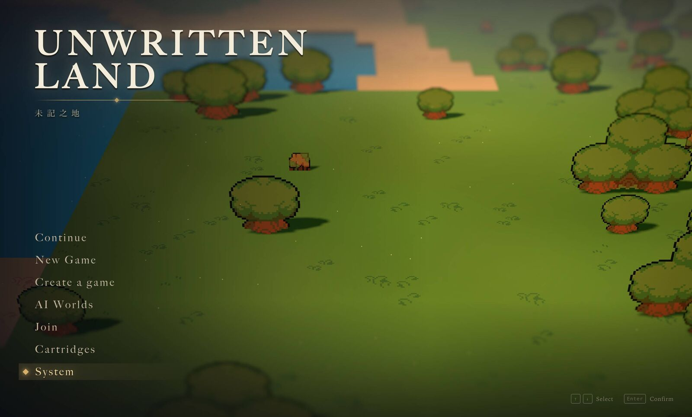
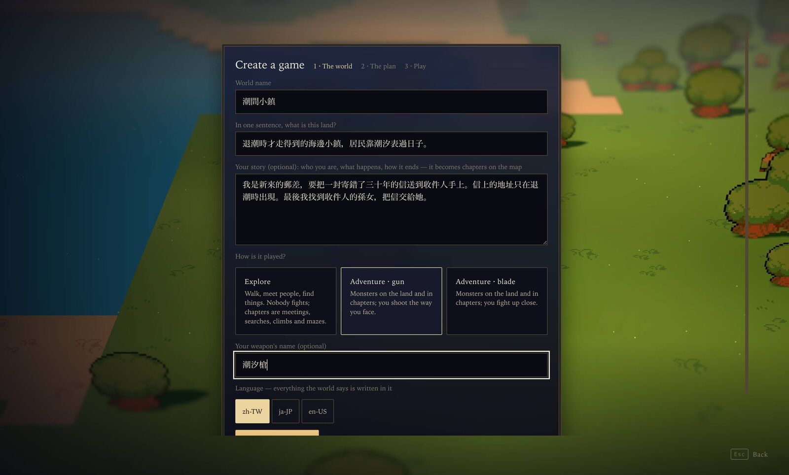
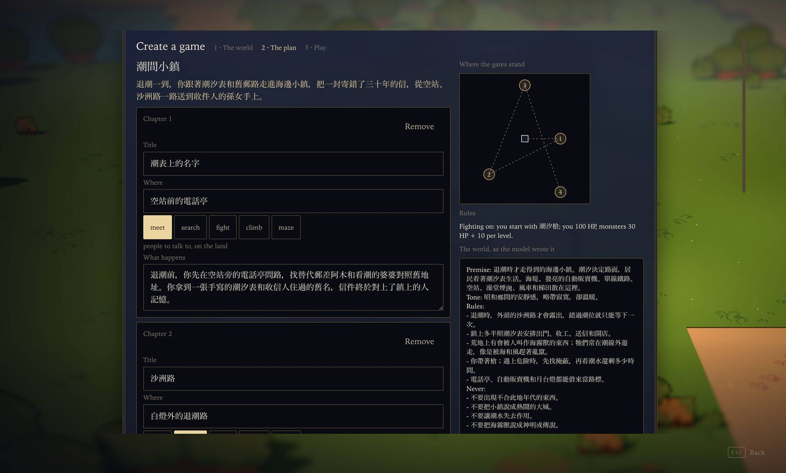
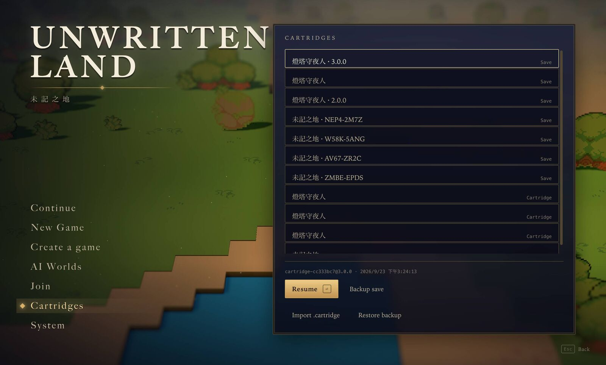
02 · Open land & story
大地沒有邊：地形從種子算出來，只有第一次走進的區塊才請模型「見證」。故事章節是地上的門：每過完一章，走向下一道門的路上，背景就把下一章寫好。
32×32 格一個區塊，只畫鏡頭看得到的區塊。河上每個區塊中心都有淺灘，所以任何門、任何地點都走得到；起點區塊永遠是乾的。
第一次走進一個區塊，模型寫下它的名字、居民、對話與習俗，存進這個存檔。重複宣告世界已經記得的傳說，會併進原本的節點，不再讓整塊失敗。
門的位置由宿主決定，依序開啟。背景寫好下一章：1–3 個人和他們的話、1–3 個寶物、2–5 隻怪（沒有戰鬥的世界就沒有怪），走到門口時它們已經站在門的周圍。卡帶的章節過完後，大地自己續寫，最多 99 章。
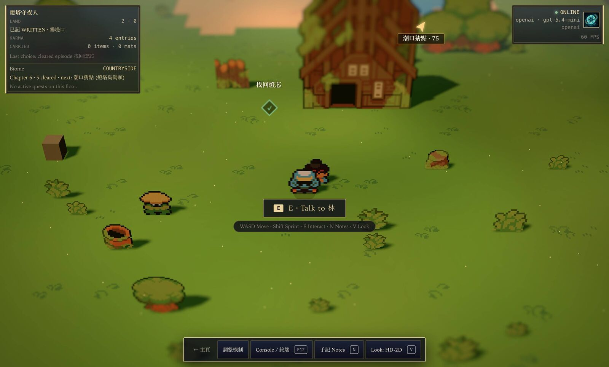
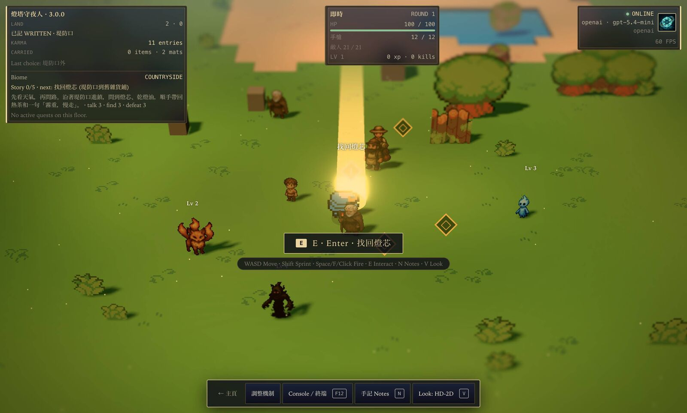
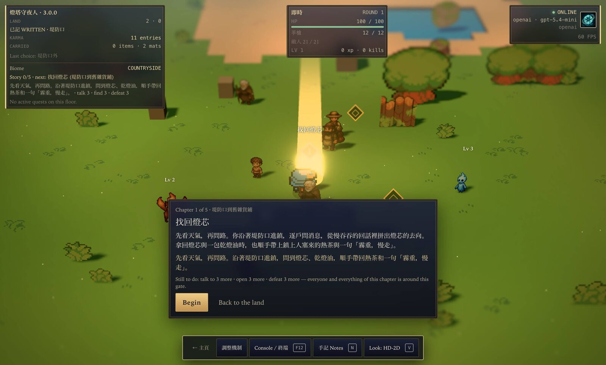
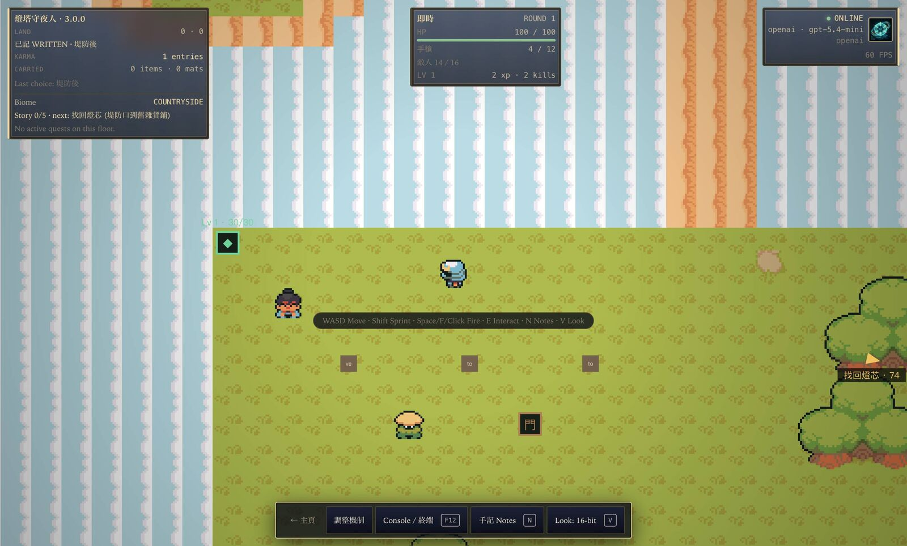
03 · Combat & tweaks
大地、橫向捲軸與地城共用同一個戰鬥迴圈。「調整機制」用一句話加武器、怪物或隊伍：卡帶缺什麼模組就補什麼，只有引擎本身沒有的模組才會拒絕。
開火、命中、回合都走同一個迴圈。大地上的野怪由種子決定：種類看地形，等級看離家多遠（最高 30）；起點與章節的怪則是寫出來的。打倒的野怪在這次遊玩裡不會再冒出來（還沒寫進存檔）。
需求 → 模型提出變更 → 先試玩 → 發布成新版本。卡帶沒有戰鬥時，「加一把槍」會連戰鬥模組一起補上（玩家 100 HP、怪物 30 HP + 每級 10），而不是回一個錯誤。
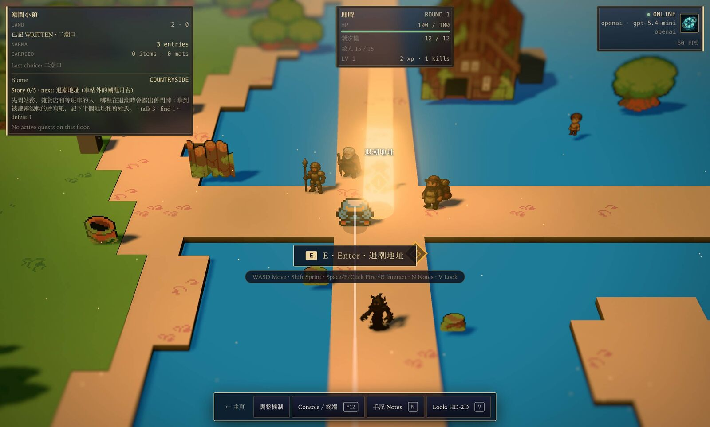
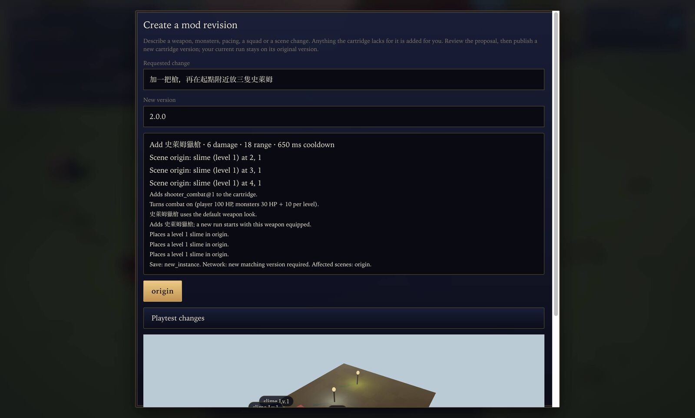
04 · Places
地點屬於這個存檔，不產生新版本。模型只寫裡面住了誰、有什麼、要做什麼；地形由宿主從種子蓋出來，所以一定走得通，每次讀檔都一樣。
| 種類 | 宿主蓋的 | 模型寫的 |
|---|---|---|
| 橫向捲軸 | 一條 61 格長的路，平台高差都跳得上去，偶爾一道矮牆，終點在最右邊 | 名字、光、居民、寶箱、怪物、一個任務 |
| 地城 | 19×19 第一人稱迷宮，有保證路線；轉身就是回大地的出口，終點在某個角落 | 同上，再加走廊擺設 |
| 進出 | 入口在淺灘交叉口；↩ 回到入口旁，✓ 走出終點算通過，寫一筆見證並在地圖上打勾 | 不寫座標：模型給的位置一律由宿主重新擺到空地上 |
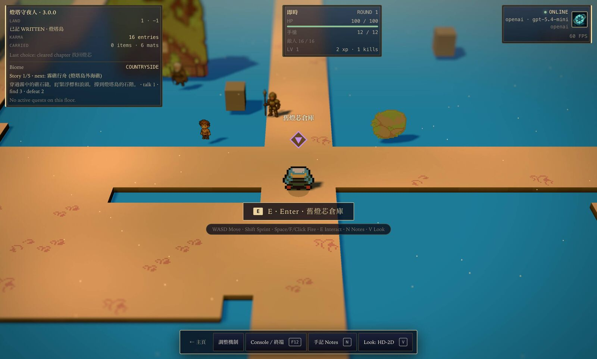
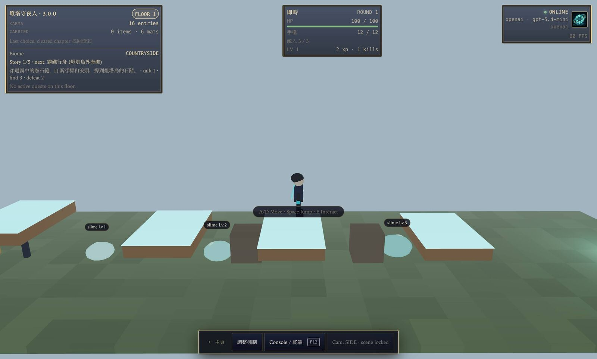
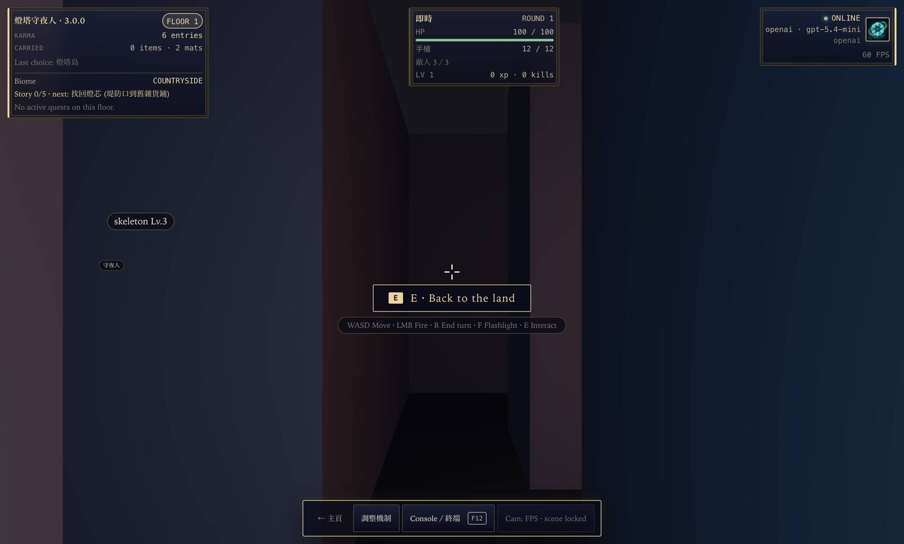
05 · AI Worlds
標題選單的 AI Worlds 是另一條路：一句話讓模型寫出一個 HTML／JavaScript 小遊戲，在 sandbox 裡跑（Rule 12），可以再用一句話修改、存成版本、串成旅程。它和故事章節分開：章節在大地上玩，AI Worlds 是獨立的小遊戲。
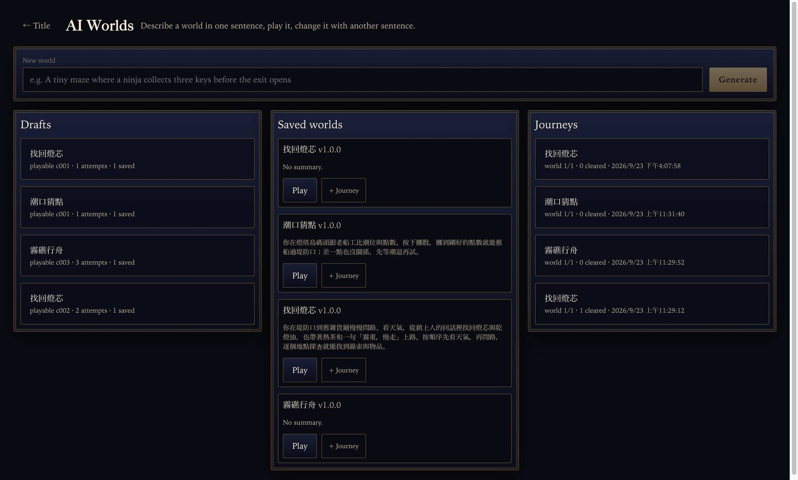
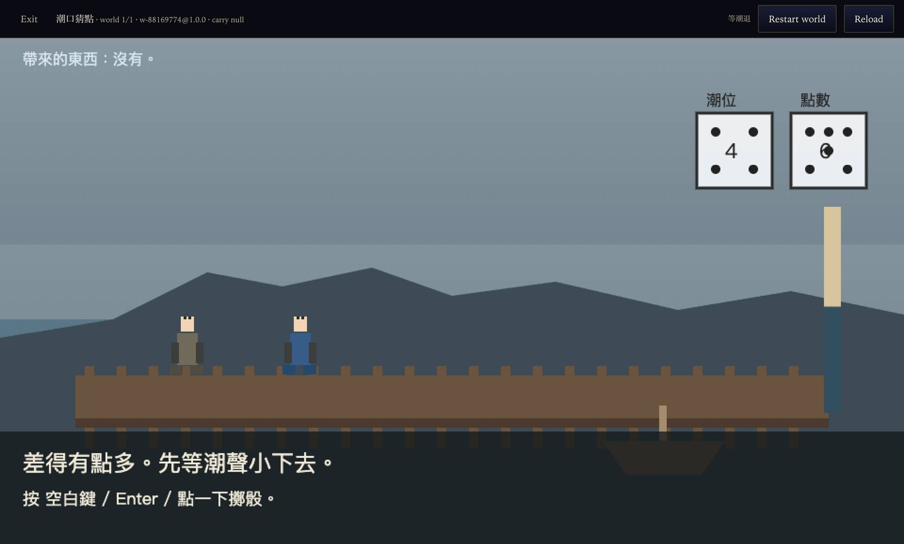
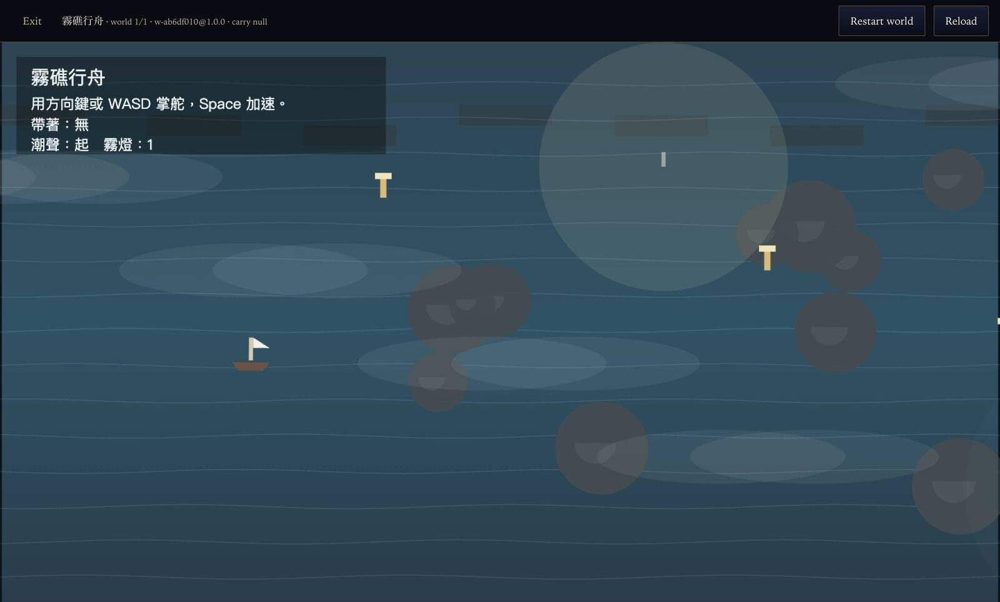
01 · Delivery scope
以下狀態來自實機驗收，不是計劃。數字全部取自實際執行紀錄（模型：gpt-5.4-mini）。
| 階段 | 產出 | 進入下一階段的條件 | 狀態 |
|---|---|---|---|
| 1 · 生成方式原型 | 同一播放器承載三種互動作品，含原始成本紀錄 | 不需玩法專用模組 | 已完成 |
| 2 · 最小播放器 | interactive-web@1：sandbox iframe + 自訂 scheme + nonce CSP + 驗證過的訊息；不可變版本、釘住的遊玩進度、草稿候選 | 惡意作品拿不到宿主能力；無窮迴圈只殺自己的行程 | 已完成並實機對抗測試 |
| 3 · 生成與修改閉環 | 一句需求 → 可玩 → 一句話改 → 保存／回復；修補上限 2 次 | 4 個玩法 3 類修改真跑通 | 已完成 |
| 4 · 故事 → RPG 地圖 | 故事 → 章節計畫（寫進卡帶雜湊）→ 地圖上的門 → 章節的人、寶物、怪物站在門的周圍（攀爬／迷宮走進地點）→ 帶著道具走向下一章 | 章節可生成、可過關、進度與攜帶物跨重開保留 | 已完成，第 1 章在大地上實玩過關 |
| 5 · 素材生成 | 缺圖的素材槽可由影像模型補上，走同一條候選→檢查→保存 | 產出可用、可回退、成本有紀錄 | 已接上（測試 3 張） |
| 6 · 無限章節 | 每過完一章就在背景寫好下一章；卡帶章節過完由大地續寫（最多 99 章），續寫的章節屬於存檔 | 走到門口不用等；失敗不自動重試，不白燒 token | 已完成，續寫到第 6 章實玩 |
| 7 · HD-2D | 標題與大地的第二個畫面層：bloom（內建 UnrealBloomPass）、tilt-shift 與調色（自寫 shader）；V 切回 16-bit | 不改地圖資料；兩種外觀玩起來一樣 | 已完成（截圖時 HUD 顯示 60 FPS） |
| 8 · 大地戰鬥與調整機制 | 一套戰鬥模型，大地上直接打；調整機制缺什麼補什麼（武器、怪物、隊伍），不再拒絕 | 沒有戰鬥的卡帶也能「加一把槍」並發布 | 已完成 |
| 9 · 地點 | 橫向捲軸與地城，從大地走進去、走出來；存檔自己的，不產生新版本 | 地形一定走得通；離開後回到入口旁、大地狀態不變 | 已完成，兩種都實玩通過 |
| 10 · 角色與怪物圖 | 9 種 NPC 職業、8 種怪物各一張，由影像模型畫一次（gpt-image-1-mini，18 張），兩種外觀都用 | 遊戲執行時不產圖；每張的 prompt 與用量有紀錄 | 已完成 |
| 11 · Create a game | 三步：世界與玩法 → 可修改的計畫（聖經、章節、門的地圖）→ 建立並進入；舊的六步 Genre Matrix 流程連同它的 authoring workspace 與 IPC 已刪除 | 只有建立會發布；聖經會配合玩法（有戰鬥就不把怪物列為禁忌） | 已完成，實際建立並進入一個新世界 |
| 12 · 測試改以 E2E 為主 | 刪掉 E2E 已經涵蓋、或只是重述實作的單元測試：834 → 384 個，119 → 93 檔。留下的只守 E2E 碰不到的失敗：不可信輸入、模型寫壞的輸出、存檔悄悄遺失、加密、多種子的不變量、鏈上編碼。CLAUDE.md Rule 0：之後以 E2E 驗證功能，每次結束在 docs/e2e/ 留下可重播的紀錄並更新本頁 | bun run check 全綠；實機 E2E（新遊戲 → 固定種子 → 走路 → 切換畫面）通過，renderer 無錯誤 | 已完成 · E2E 紀錄 |
| 13 · ENSv2 與卡帶名稱 | ENS 讀取改走 ENSv2 Universal Resolver（預設 Sepolia，可切主網，支援 CCIP-Read 與 DNS 名稱）；每個發布的卡帶可在 Sepolia 認領 <cartridgeId>.<父名稱>.eth，紀錄只有 id、版本與 sha256。bun run ens:setup 做一次性設定，--dry-run 用 eth_simulateV1 跑完整條鏈上流程（見第 05 頁） | 模擬中的子名稱能從 Universal Resolver 讀回；app 內 Sepolia／主網解析、卡帶名稱列與「用 ENS 名稱開啟」實機通過，renderer 0 個錯誤（E2E 38 秒） | 已完成 · 鏈上只以模擬驗證，尚未送出真實交易 · E2E 紀錄 |
| 量到的 | 結果 |
|---|---|
| 首次可玩（自動檢查通過） | 四個玩法（RPG／ARPG／迷宮／瑪利歐式平台）3/4 第一次就過，全部在 1 次修補內可玩；故事章節（當時是 AI 網頁小遊戲）2/2 第一次就過 |
| 生成耗時 | 單一世界 16–52 秒（其中模型 13–30 秒）；當時的故事章節 23 秒與 28 秒 |
| Token（可取得，費用 API 不回傳） | 生成四個世界共 7,405 in / 11,073 out；當時的故事章節（舊版 AI 網頁章節）各約 1,230 in / 3,000 out |
| 修改成本 | 改一條規則 6.7 秒 / 225 out tokens、換素材 5.2 秒 / 155 out、調畫面 6.9 秒 / 507 out；5 次修改全部生效，4 次一次過 |
| 素材生成 | 3 張 256px 透明 PNG，各約 16 秒、約 1,056 output tokens |
| 隔離 | 惡意作品拿不到 preload／Node／父頁面／儲存／eval／網路／彈窗／導頁；無窮迴圈只吃掉自己的行程（97% CPU），宿主往返仍 95–98 毫秒 |
docs/e2e/<日期>-<流程>/（run.json 可重播、result.md、截圖）。02 · Acceptance
先證明生成方式，再固定執行契約；避免一開始把新的框架做成另一個龐大引擎。
用圖文分支、卡牌交換、場景推理三個題目建立可丟棄原型。共同契約保持最小；記錄生成與局部修改的實際結果。
落實作品載入、生命周期、素材與存檔；決定隔離機制、訊息邊界、依賴與資源限制。新舊作品格式明確分流。
沿用可用模型連線，加入草稿生成、預覽、定位錯誤與有限修補。修改採相符版本基底，不覆蓋晚到結果。
03 · Development prompts
Prompt 1–3 都已交付並驗收，內容保留在這裡當作可追溯的來源。還沒回答的問題寫在第 04 頁第 07 節。
請在 /Users/kidney/Workspace/Hackathon/26ethtokyo 為 Unwritten Land 驗證新的 AI 遊戲生成方向。
產品決策：框架核心是降低 AI 生成、修改與修補互動作品的成本。不強制 Three.js、SceneGraph 或 gameplay kit；預設探索 HTML／CSS／JavaScript 的 2D 作品，圖片與 Canvas 按需使用。框架提供通用服務，玩法由 AI 產生。暫不遷移或刪除舊路徑。
先讀 AGENTS.md（若有）、CLAUDE.md、plan.md 與 docs/architecture/afm3-dsl-architecture.html。新版 HTML 是本次方向依據；現有規範描述的 data-only 邊界仍適用於舊路徑。依專案流程評估規模，使用 prototype skill 建立獨立、可丟棄的實驗。涉及新執行邊界時按 L 級處理，不在宿主直接執行生成程式。
用同一個最小播放器承載：
1. 圖文選擇與分支結果。
2. 卡牌交換與自訂勝利條件。
3. 點擊場景、收集線索與推理。
三者只是題目，不得各自新增專用引擎模組。實驗樣本需標明來源，不冒充正式資料或模型輸出。
比較模型所需上下文、首次可玩成功率、耗時、可取得的 tokens／費用、修補次數，以及修改規則時的變更範圍。確認第二、第三種玩法不需要修改播放器。有模型時實際生成；沒有時完成獨立可驗證工作，明列未量測項目，不虛構數據。
交付可執行原型、實驗結果與最小作品契約建議，說明哪些由作品決定、哪些由播放器提供。依證據推薦下一階段。先不做通用模組平台、完整編輯器或舊功能遷移。請在 /Users/kidney/Workspace/Hackathon/26ethtokyo，依前一階段原型結果，實作最小 AI 互動作品播放器。
先讀專案規範、新版 docs/architecture/afm3-dsl-architecture.html 與原型結論。原型尚未完成時先驗證關鍵假設。此工作涉及生成程式執行邊界，依 L 級流程規劃、grilling、實作與 code-review。
目標是同一播放器執行不同 2D 玩法，不新增玩法專用 kit，不強制 Three.js。
範圍：作品入口與本機素材載入；開始／重新開始／退出；最小存檔讀寫介面；載入與執行錯誤回報；修正後重新載入。支援 HTML／CSS／JavaScript，其他依賴依真實需求加入。
沿用 Cartridge／Instance／Workspace 的責任分離與版本機制，但不把互動作品硬塞進 Scene DSL。新增格式使用明確版本或作品類型，舊卡帶保持可讀。新舊路徑的規範差異需明確記錄，不放寬所有舊 mods 的權限。
生成作品在隔離環境執行，不能直接接觸宿主 preload、Node、檔案系統、憑證或任意網路。宿主服務透過有限且驗證過的訊息介面提供。先提出具體隔離、資源限制與故障復原設計，不假設現有 data-only 驗證已足夠。
驗收三種玩法共用播放器、新作品不修改播放器、重開可恢復進度、單一作品故障不破壞宿主與其他作品。權限與跨邊界驗證有必要測試，完成專案檢查與實機流程。
交付可操作的最小入口與驗收結果，先不做完整創作 UI、多人、商店或模組目錄。請在 /Users/kidney/Workspace/Hackathon/26ethtokyo，基於已驗證的互動作品播放器，實作最小 AI 創作閉環。先讀專案規範、新版 docs/architecture/afm3-dsl-architecture.html 與前階段契約／驗收結果，依規模選擇流程。
目標是降低生成與修改成本，不重新引入 Genre Matrix、Capability Compiler 或強制六步 Create。
使用流程：一句需求 → 生成作品 → 直接試玩 → 輸入修改要求 → 更新預覽 → 保存版本。
給模型最小作品契約與宿主 API 說明，讓模型自行定義畫面、互動、狀態與規則。沿用可用模型連線；新格式只新增必要薄介面，不重寫整套 inference。
作品檔案與素材引用分離，讓換圖或改規則可局部進行。第一版可用文字、CSS 圖形與實際提供的素材；缺圖需明示，不放假素材或聲稱已生成。
收集語法、載入與執行錯誤供模型定位，設定明確修補上限。所有生成與修補先寫草稿，保留上一個可執行版本；支援取消，晚到或基底已變更的結果不得覆蓋新草稿。呈現修改摘要，可回復前版。正式版本不可變，遊玩進度分開；修改若影響存檔相容性需明示，不靜默損壞進度。
至少用三個不同需求及改規則、換素材、調畫面三類修改驗收。確認要求生效，也確認未要求修改的行為正常。記錄首次可玩成功率、耗時、可取得的 tokens／費用、修補次數與修改成功率，只報真實結果，不以預製作品冒充即時生成。
完成必要測試、專案檢查與實機驗收。交付可現場展示的生成→試玩→修改流程及下一個成本瓶頸，先不擴充發布平台與大型編輯器。04 · Demo & definition of done
以下每一步都已在 app 裡實機操作過；對應畫面見第 02 頁。
| 步驟 | 展示 | 證明 |
|---|---|---|
| 生成 | 輸入一個小型作品需求，直接看到可操作結果 | AI 能在少量框架說明下產出作品 |
| 修改 | 一句話改規則，再換素材或調整布局 | 修改可以局部生效，不必整個重做 |
| 回復 | 切回上一個可玩版本，再退出／重開 | 試錯可回復，作品與進度有清楚歸屬 |
| 換玩法 | 載入另一種互動作品 | 新玩法沒有要求新增底層模組 |
| 成本 | 展示真實耗時、修補與使用量紀錄 | 降低成本有證據，不只是一段生成動畫 |
01 · Responsibility
新版允許探索生成可執行的玩法程式。這是新的作品類型與信任邊界，不是把任意程式塞進現有可信 renderer。
現行架構；作品類型 interactive-web@1、宿主 API 與訊息協定已固定（src/shared/works.ts、workPrompt.ts）。
| 責任 | AI 生成的作品 | 框架／宿主 |
|---|---|---|
| 畫面 | 布局、文字、角色與物件呈現 | 預覽區域、資產載入與顯示錯誤 |
| 規則 | 狀態轉移、操作結果、勝敗條件 | 不新增每種玩法專用的判定器 |
| 保存 | 可序列化的作品進度與狀態版本 | 按作品／實例隔離，限定大小、原子保存與恢復 |
| 依賴 | 使用契約允許的能力與素材 | 固定可用依賴、資產來源與執行資源範圍 |
| 模型 | 創作與修改階段產生檔案 | 模型連線、憑證、取消與使用量留在宿主 |
02 · Minimum contract
以下是已固定的責任分工；實際的限制與訊息格式在 src/shared/works.ts（WORK_LIMITS、訊息 schema）。
| 契約部分 | 第一版應描述的事 | 不應綁住的事 |
|---|---|---|
| 作品標識 | 格式版本、作品類型、入口、內容檔案與相對素材引用 | 不要求 SceneGraph、genre、相機或 kit |
| 生命周期 | 載入、ready、重新開始、退出、錯誤；需要時回報完成 | 不規定回合制、探索或固定結局結構 |
| 宿主通道 | 有限命令、request／response、大小限制、session 歸屬 | 不暴露 window.seed 或任意 IPC |
| 存檔 | 作品 revision／hash、state schema version、可序列化狀態 | 不把個人進度打包成發布內容 |
| 修改 | 基底 revision、變更檔案、摘要、候選與驗證結果 | 不要求所有修改都重生全作品 |
| 素材 | 存在性、來源、檔案完整性、替換範圍 | 不要求一次生成全部圖片；目前只接 OpenAI 影像 API（模型可設定） |
03 · Execution & repair
OpenUI parser 仍服務既有 DSL 卡帶；新作品走的是隔離執行、訊息驗證與行為檢查這一條，以下都已落地並實測。
ulwork:// 主機，由主行程供頁，帶自己的 nonce CSP；sandbox iframe 不給 same-origin。main.js:行:列 回給模型，最多修補 2 次；超過就保留錯誤，不動可玩版本。04 · Existing implementation
新舊並存的現況：卡帶／實例／草稿的責任分離被沿用，AI 作品是它旁邊的新類型，不是取代。
| 現有部分 | 新版處置 | 仍待完成 |
|---|---|---|
| Cartridge／Instance／Workspace | 保留發布內容、個人進度、草稿分開的責任 | 已完成：AI 作品另存 works／work-plays／work-drafts（Rule 12） |
| Three.js／R3F／Rapier／Scene DSL | 大地走 engine2d（2D canvas 或 three.js HD-2D 兩種畫法，自己的移動與碰撞）；地點（橫向捲軸、地城）走 R3F／Rapier 的 GameCanvas；故事章節在大地或地點裡玩 | AI Worlds 的網頁作品與卡帶路由分開、各自存檔；攜帶物只在大地章節之間 |
| Genre Matrix／Capability Compiler／六步 Create | 已刪除（約 5,000 行，含 authoring workspace 與 IPC）；Create a game 換成三步（世界與玩法 → 計畫 → 建立） | 卡帶的發布管線（capabilities、forge）仍在，Create a game 與調整機制都用它 |
| Inference／AFM scene artifact | 優先重用可用模型連線與取消機制；AFM 場景能力留給適用作品 | 已完成：@@ 行協議、錯誤帶 main.js:行:列、修補最多 2 次 |
| 備份與版本 | 保留精確 revision 與 hash 的身份原則 | 目前 instance 備份未包含顯影 chunks、lore、notes；不宣稱現有世界備份完整 |
| 多人／身份／ENS／鏈上發布 | 既有能力保留；不當新播放器的前置條件。ENS 讀取已改走 ENSv2，卡帶可認領子名稱（第 05 頁） | 分享頁與跨機器下載驗證仍待另定範圍 |
plan.md 的「見證人／無限地圖」現在就是主遊戲：大地、見證、章節、戰鬥與地點都在它上面。CLAUDE.md 的 data-only 規則仍管卡帶、Scene DSL 與 mod；只有標題選單的 AI Worlds 能寫程式，而且只在 sandbox 裡（Rule 12）；故事章節是資料（Chapter 語言），不是程式。舊遊戲沒有刪除。05 · Story → map
RPG 是外框，小遊戲是劇情。故事先變成一串章節，散在同一張無限地圖上；章節用完了，大地接著寫，道具跟著人走。
| 誰負責 | 內容 | 存在哪裡 |
|---|---|---|
| 模型 | 世界聖經（core／style）＋ 3–6 個章節：標題、地點、玩法種類、一段簡述 | 章節計畫寫進卡帶 bible/story.json，和內容雜湊綁在一起 |
| 宿主 | 把每章放到地圖上的一個區塊（卡帶章節在向日葵螺旋上；續寫的章節從上一章再走約 2.5 個區塊、每章轉一個黃金角）、畫門、指南針、鎖與解鎖順序 | 純函式，位置不由模型決定 |
| 續寫 | 卡帶章節都過完後，大地一次寫一章（一個 @@episode），延續世界聖經與前面的劇情，最多 99 章 | 存檔的 land.storyMore，屬於這個存檔，不是卡帶 |
| 章節內容 | 模型寫這章的人和他們說的話、寶物、怪物（Chapter 語言，不寫座標）；攀爬或迷宮類的章節寫成地點。只預寫下一章 | 存檔的 land.episodes[id].stage；宿主擺位置、記錄做了什麼、判定完成 |
| 攜帶物 | 每章找到的東西由宿主合併進攜帶物（後面的章節蓋不掉前面的），再帶進下一章 | 存檔的 land.storyCarry；過關同時寫一筆見證 karma |
06 · Assets
素材引用與程式分離：換一張圖只動 assets.json 與一個檔案，不必重寫玩法。
| 來源 | 怎麼用 | 邊界 |
|---|---|---|
| 內建 CC0 圖庫 | 角色、地形、道具、愛心；用 id 或直接用 library/… 路徑都可以 | 隨 app 散布，授權可公開（Ninja Adventure, CC0） |
| 影像模型 | 對著素材槽的說明生成一張透明 PNG（預設 gpt-image-1-mini，縮到 256px） | 金鑰只在主行程；生成也是一個候選，要通過播放器檢查才會變成目前版本 |
| 玩家自己的圖 | 從檔案挑一張換掉某個素材槽 | 同一條路徑，同樣可回退 |
| 沒有圖 | 世界必須畫出標著「missing: id」的方塊 | 不允許假素材冒充；宿主也會把「要了不存在的素材」當錯誤回報給模型修補 |
07 · Open decisions
原本這裡都是待答問題；現在多數有答案了，剩下的仍然只寫問題與需要的證據。
| 問題 | 何時決定 | 需要的證據 |
|---|---|---|
| 單檔或多檔作品？是否需要建置？ | 已回答 | 三個檔案（main.js／style.css／assets.json）＋素材，不需要建置；規則、畫面、素材各改各的 |
| 用什麼機制隔離執行？ | 已回答 | 每個 session 一個隨機 ulwork:// 主機、sandbox iframe（不給 same-origin）、nonce CSP、驗證過的 postMessage；實測連無窮迴圈都只死自己 |
| 宿主 API 最少需要幾個？ | 已回答 | 八個：root, carry, load, save, loop, complete, status, asset（loop 給以秒計的 dt，取代 requestAnimationFrame） |
| 局部修改採什麼格式？ | 已回答 | @@ 行協議：整檔替換或 SEARCH/REPLACE；改一條規則只動 3 行 |
| 模型重複犯的錯要不要由框架吸收？ | 已回答 | 要。已吸收：狀態列洗頻、素材路徑、攜帶物被蓋掉、存檔無法還原（復原檢查）、時間單位（host.loop）、存檔補欄位（host.load）、重複宣告的傳說（併進既有節點）；修補只送失敗的語句，不重生全檔 |
| 無限化怎麼做才不先付錢？ | 已回答 | 只預寫下一章，一次一件，失敗不自動重試；卡帶章節用完由大地續寫，實玩到第 6 章。長線故事會不會漂移仍要更長的實玩 |
| HD-2D 值不值得？ | 已回答 | 做成大地的第二個畫面層（three.js，bloom 內建、tilt-shift 與調色自寫 shader），不動地圖資料；V 可切回 16-bit |
| 每種玩法要各有一套戰鬥嗎？ | 已回答 | 不要。一個戰鬥迴圈，大地、橫向捲軸、地城共用；地點是存檔自己的，不是新版本 |
| 大地的備份要不要含見證過的區塊？ | 下一階段 | .spire-backup 目前只有 instance 與存檔，不含區塊、傳說與手記；要決定格式與大小上限 |
| 角色與怪物要不要改用影像模型畫？ | 已回答 | 要。一次畫好 17 種（9 職業＋8 怪物），風格一致；是開發時的一次性步驟，遊戲不會自己產圖 |
| 同伴要不要在大地上跟著走？ | 下一階段 | 規則裡已有隊伍（party），但大地上還不畫也不跟隨；做好之前 Create a game 不提供這個選項 |
01 · Why a chain at all
遊戲本身不需要鏈。上鏈要解的是兩件離線做不到的事：不可否認的出處，以及任何人都能讀到、不被單一伺服器刪掉的見證。
不可變版本的 sha256 內容雜湊、作者位址、血緣（remix 自哪一版）、可取得檔案的 URI，以及玩家對某一版留下的短見證。
作品檔案、素材、存檔、故事章節進度、模型輸出與任何個人資料。鏈上沒有內容，只有指向內容的雜湊。
沒設定 RPC 與合約位址時，生成、試玩、修改、保存版本全部照常；沒設定時不顯示出處區塊，不擋任何流程。
02 · UnwrittenLedger
對應 plan.md 的雙帳本精神：不可變的事實帳，加上可互相矛盾、永不調和的人話帳。合約原始碼在 contracts/src/UnwrittenLedger.sol。
| 介面 | 做什麼 | 規則 |
|---|---|---|
publish(contentHash, parent, kind, uri) | 事實帳：記下某個不可變版本由誰發布、remix 自哪一版、去哪裡拿檔案 | 同一個雜湊只能發布一次；parent 必須是已發布的雜湊或 0；空雜湊被拒絕 |
witness(contentHash, note) | 見證帳：玩家對看過的版本留下 280 bytes（UTF-8）以內的話；app 也照 bytes 截斷 | 只能掛在已發布的雜湊上；任何人都能留；不覆寫、不調和、不排序 |
revisionOf(hash) / isPublished(hash) | 讀出作者、血緣、時間、種類與 URI | 純讀取，不需要金鑰 |
事件 Published / Witnessed | 索引用：依雜湊、作者、血緣查詢 | Published 三個、Witnessed 兩個 indexed 欄位，方便之後做分享頁或排行 |
03 · App integration
與模型金鑰同一條規則（CLAUDE.md Rule 6）：renderer 永遠拿不到 RPC URL 與私鑰，只能請主行程去查或去送。
| 設定（.env） | 開啟什麼 | 沒設定時 |
|---|---|---|
UNWRITTEN_RPC_URL + UNWRITTEN_LEDGER_ADDRESS | 讀出處：作品列表顯示「on chain · 作者」或「not on chain」 | 不顯示出處區塊，回傳 ledger-not-configured 並附上怎麼設定 |
再加 UNWRITTEN_PRIVATE_KEY | 寫出處：保存版本後可按「Register on chain」；主行程簽章送出 | 只讀模式，按鈕不出現，錯誤碼 ledger-read-only |
UNWRITTEN_CHAIN_ID | 選鏈；已知鏈會算出 explorer 位址，但畫面目前只顯示交易雜湊 | 當作本地鏈，沒有 explorer 連結 |
bun run contracts:build 編譯並更新已提交的 artifact，bun run contracts:deploy 用你自己的金鑰部署並印出位址。這一步會花 gas，所以不由代理代跑。04 · ENSv2 names
<cartridgeId>.<父名稱>.ethENS 已改用 ENSv2。讀取一律經過 Universal Resolver；每個發布的卡帶可以在 Sepolia 上認領一個子名稱，名稱只指向「哪一個版本」，內容仍然不上鏈。
viem 2.56 內建 Universal Resolver 0xeeee…eeee，不寫死地址。ENSv2 目前只在 Sepolia（預覽版），所以預設查 Sepolia，可切回主網（主網在同一個入口後面仍是 ENSv1）。依 readiness 頁：接受 DNS 名稱、支援 CCIP-Read，位址與文字紀錄分開查。
名稱只帶三筆文字紀錄：unwritten.cartridge、unwritten.version、unwritten.hash（sha256）。畫面只說「幫這一版命名」；寫上鏈的雜湊由主行程從硬碟重讀，不信任畫面傳來的值。子名稱由 .env 的金鑰持有，玩家不需要錢包，也不會過期。
bun run ens:setup <label>：部署這把金鑰的 Permissioned Resolver 與父名稱的 User Registry（Verifiable Factory proxy），再經 ETH Registrar 以 commit → 等 60 秒 → register 註冊 <label>.eth。費用是可免費 mint 的 MockUSDC；gas 由人來出，所以不由代理代跑。
| 步驟 | 發生什麼 | 沒設定／沒金鑰時 |
|---|---|---|
ens:setup <label> --dry-run | 用 eth_simulateV1 在 Sepolia 上重播每一步，最後建一個測試子名稱，從 Universal Resolver 讀回它的紀錄比對 | 不需要金鑰，不送出任何東西 |
ens:setup <label> | 真的註冊父名稱，印出 UNWRITTEN_ENS_PARENT / _REGISTRY / _RESOLVER 三行貼進 .env | 沒有 UNWRITTEN_PRIVATE_KEY 就停下並說明 |
| 標題 → 卡帶：名稱列 | 即時顯示這一版的名稱：尚未認領／指向這個版本／指向其他版本；有金鑰時可「認領」或「把名稱指向這個版本」（兩筆交易，等收據） | 顯示「這台機器還沒設定 ENS 名稱」，或名稱照讀、標示唯讀 |
| 標題 → 卡帶：用 ENS 名稱開啟 | 名稱 → 它指向的確切版本；收藏裡有相同雜湊就直接「開始玩」，沒有就請你匯入 .cartridge 並寫出它必須符合的雜湊 | 任何機器都能讀，不需要金鑰 |
0xc960…）不是 Universal Resolver 現在走的那一套；照它註冊，名稱存在但查不到（ResolverNotFound）。實際在用的是 ens_v2_sepolia_20260916（contracts-v2 @ 366de741，root 0x9703…），這版 resolver 的 setText 改吃 DNS 編碼名稱、initialize 改吃授權清單。地址釘在 src/main/chain/ensCalls.ts；設定腳本先比對鏈上的 root，ENS 再重新部署就停下說明，不會寫出沒人查得到的名稱。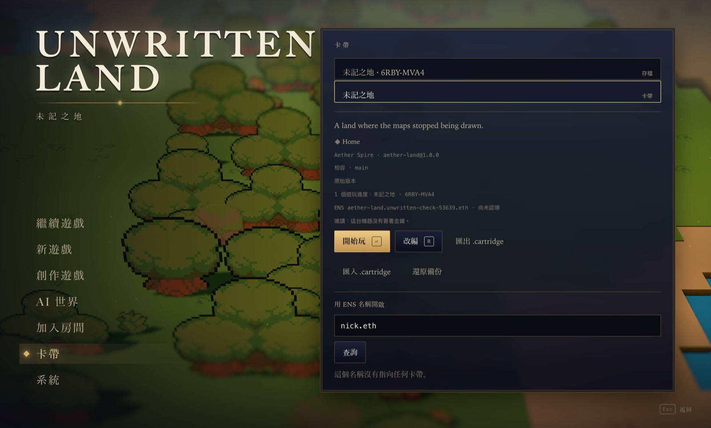
nick.eth 查詢，它沒有卡帶紀錄，所以回報「沒有指向任何卡帶」。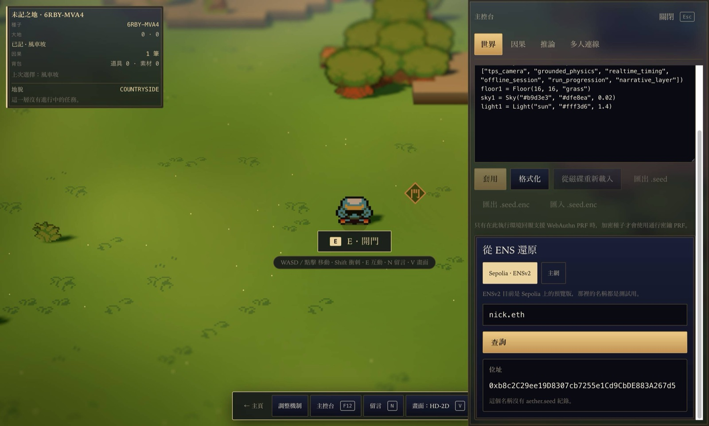
nick.eth 解析出位址，沒有 aether.seed。同一面板切到主網，test.offchaindemo.eth 回 0x7799…cDb97，和 readiness 頁的 CCIP-Read 測試值一致。05 · Status & limits
只寫實際跑過的；沒跑過的就說沒跑過。
| 項目 | 狀態 |
|---|---|
| 合約邏輯（重複發布、未知血緣、見證長度、只能掛已發布版本） | 在行程內 EVM 實跑通過 |
| 編譯產物與原始碼一致 | 測試會重編並比對 bytecode |
| App 讀取與錯誤訊息（未設定、只讀、壞雜湊） | 以 stub RPC 測過 |
| 部署到公開測試網、用真實交易寫入 | 尚未進行（需要你的金鑰與 gas） |
| ENSv2 讀取（Sepolia／主網切換、CCIP-Read、readiness 測試名稱） | 實機 app 內解析通過 |
| 卡帶子名稱的完整鏈上流程（部署 proxy、註冊父名稱、建子名稱、寫紀錄、Universal Resolver 讀回） | eth_simulateV1 模擬通過 |
| 卡帶面板的名稱狀態（未設定、唯讀、尚未認領、用名稱開啟） | 實機截圖 |
真實送出 ens:setup 與「認領」交易；「收藏裡有這一版 → 開始玩」 | 尚未進行（需要你的金鑰與 Sepolia ETH；鏈上還沒有卡帶名稱） |
| 分享頁、跨機器下載驗證 | 尚未實作 |